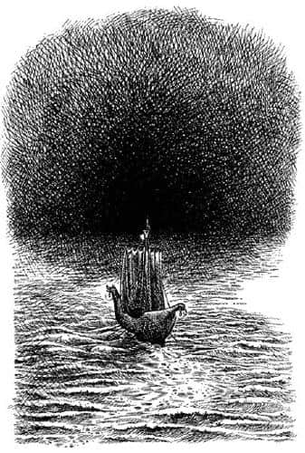

Karanlık Ada
Bu maceranın ardından, önce güneye ve sonra da biraz doğuya doğru hafif bir rüzgârla on iki gün boyunca yol aldılar. Gökyüzü genellikle berrak, hava ılıktı. Sancak tarafında çok açıklarda su fışkırtan balinalar dışında ne bir balık ne de bir kuş vardı. Lucy ve Bastıbacak bu süre boyunca epeyce satranç oynadılar. On üçüncü gün, Edmund silah güvertesinden, denizden yükselen ve simsiyah bir dağa benzeyen bir şey gördü.
Yönlerini değiştirip kürek çekerek karaya yöneldiler, çünkü rüzgâr kuzeydoğuya yelken açmaya uygun değildi. Akşam olduğunda hâlâ karadan epeyce uzaktaydılar, tüm gece kürek çektiler. Ertesi sabah hava iyiydi, yalnız hiç esinti yoktu. Karanlık kütle, çok daha yakında ve koskocaman önlerindeydi, ama hâlâ belirsizdi, bu yüzden bazıları hâlâ çok uzaklarda durduğunu, diğerleriyse sise girmekte olduklarını düşünüyordu.

O sabah dokuza doğru durup dururken öylesine yaklaştı ki, onun kara olmadığını, hatta bildik anlamda bir sis bile olmadığını anladılar. Bu bir “karanlık”tı. Tanımlaması oldukça güç; kendinizi bir demiryolu tünelinden – ucundaki ışığı göremediğiniz çok uzun ya da çok virajlı bir tünelden – bakarken hayal ederseniz nasıl olduğunu anlarsınız. Birkaç metre boyunca rayları, traversleri ve çakılları günışığındaymış gibi görebilirsiniz; sonra her şeyin alacakaranlıktaymış gibi olduğu yere gelirsiniz; sonra tüm bu raylar, traversler ve çakıllar, koyu karanlıkta bir daha ayırt edilemeyecek biçimde gözden kaybolur. Burada da aynen öyleydi. Pruvanın birkaç metre önünde parlak mavi suları görebiliyorlardı. Bunun ötesinde suyun rengi, akşam geç vakitte olduğu gibi solgun ve griydi. Daha da ilerideyse sular, ay ve yıldızlardan yoksun bir gece gibi tamamen karanlıktı. Caspian tayfabaşına gemiyi yavaşlatması için bağırdı ve kürekçiler dışında herkes koşup baktı. Ancak görülecek bir şey yoktu. Arkalarında deniz ve güneş, önlerindeyse “karanlık” vardı.
“İçlere doğru ilerleyelim mi?” diye sordu Caspian, sonunda.
“Tavsiye etmem” dedi Drinian.
“Kaptan haklı” dedi gemicilerin çoğu.
“Ben de haklı olduğunu düşünüyorum” dedi Edmund.
Lucy ve Eustace bir şey söylemediler, fakat her şeyin doğal akışında ilerlemesinden memnunluk duyuyorlardı. Bastıbacak aniden sessizliği yırttı.
“Neden olmasın?” dedi. “Birisi bana neden gitmememiz gerektiğini açıklayabilir mi?”
Kimse ağzını açmadığından Bastıbacak devam etti.
“Eğer köylüler ya da köleler olsaydı karşıma alıp konuştuğum, bu davranışın korkaklıklarından kaynaklandığını söylerdim. Umarım gepegenç saraylılardan, soylulardan oluşan bir topluluğun karanlıktan korkup kaçtığı gibi bir dedikodu çıkmaz Narnia’da.”
“Karanlığı yararak ilerlemenin ne gibi bir yararı olabilir ki?” diye sordu Drinian.
“Yararı mı?” diye cevapladı Bastıbacak. “Yararı mı Kaptan? Eğer yararla midelerimizi ya da cüzdanlarımızı doldurmayı kastediyorsan, bir yararı olmayacağını itiraf etmeliyim. Bildiğim kadarıyla biz, yararlı şeyler aramak için değil, macera ve onur aramak amacıyla yelken açtık. İşte ömrüm boyunca karşılaşabileceğim en büyük macera burada ve eğer geri dönersek, onurumuza düşecek leke öyle kolay silinecek türden olmaz.”
Gemicilerin birçoğu alçak sesle, “Boş ver onuru” der gibi bir şeyler fısıldaştılar, ama Caspian:
“Ah, kahrolasın Bastıbacak. Keşke geride bıraksaydık seni. Tamam! Eğer fikrin buysa, sanırım devam etmeye mecburuz. Ancak Lucy istemiyorsa—” dedi.
Lucy gitmeme taraftarıydı, ama yüksek sesle söylediği şey, “Ben varım” oldu.
“Majesteleri en azından fenerleri yakmamızı emretseler” dedi Drinian.
“Elbette” dedi Caspian. “İcabına bakın Kaptan.”
Böylece baştaki, kıçtaki ve direğin tepesindeki üç fener yakıldı, ayrıca Drinian geminin ortasında iki meşale yakılmasını emretti. Günışığında zayıf ve solgun görünüyorlardı. Sonra küreklerdekiler dışında tüm adamların tam teçhizat güverteye çıkmaları ve kılıçlarını çekip savaş pozisyonu almaları emredildi. Lucy ve iki okçuya, silah güvertesinde nöbet tutma görevi verildi. Rynelf derinliği ölçmek için kullandığı sicim elinde, hazır ve nazır, baştaydı. Parlayan zırhlarıyla Bastıbacak, Edmund, Eustace ve Caspian onun yanındaydı. Dümene Drinian geçmişti.
“Ve şimdi, Aslan adına ileri!” diye bağırdı Caspian. “Kürekleri yavaş ve düzenli çekin. Hepiniz sessiz olun ve emirleri duyabilmek için kulak kesilin.”
Adamlar kürek çekmeye başlayınca Şafak Yıldızı bir gıcırtı ve inlemeyle ilerlemeye başladı. Yukarıda, silah güvertesinde olan Lucy, karanlığa girdikleri anda harika bir görüntü yakalamıştı. Güneş geminin kıçını terk etmeden önce pruva karanlıkta kaybolmuştu. Lucy pruvanın kayboluşunu görmüştü. Az önce yaldızlı kıç, mavi deniz ve gökyüzü engin bir aydınlıktayken, biraz sonra deniz ve gökyüzü kaybolmuştu ve artık, az önce zorlukla görülebilen kıç feneri geminin nerede sona erdiğini gösteren tek işaretti. Lucy, fenerin önünde, dümenin yanına çömelmişti, Drinian’ın karartısını görebiliyordu. Aşağıda, iki meşale güvertenin iki küçük bölümünü görülür duruma getiriyor, ışığı kılıç ve miğferlerden yansıyordu; daha ileride, baş kasarada başka bir aydınlık bölge vardı. Ayrıca, Lucy’nin yanı başında yükselen direğin tepesindeki fenerle aydınlanan silah güvertesi bu sonsuz karanlıkta tek başına yüzen küçük ve aydınlık bir dünya gibi görünüyordu. Fenerler, gündüz saatlerinde yakıldığında olduğu gibi, donuk ve tuhaf görünüyorlardı. Lucy üşüdüğünü fark etti.
Karanlığın içinde yaptıkları bu yolculuğun ne kadar sürdüğünü kimse bilmiyordu. Iskarmozların gıcırtısı ve küreklerin şıpırtısı dışında hareket ettiklerini gösteren hiçbir şey yoktu. Edmund pruvadan baktığında, fenerin ön taraftaki suda yansıması dışında bir şey göremedi. Bu, yağ üzerinde bir yansımaya benziyordu; ilerleyen pruvanın yaptığı dalgacıklar küçük, ağır ve cansız görünüyordu. Zaman geçtikçe kürekçiler dışında herkes soğuktan titremeye başladı.
Aniden bir yerlerden – yön duyguları artık pek işe yaramıyordu – bir çığlık duyuldu, bu, ya insana benzemeyen bir canlının ya da aşırı dehşete düşmüş ve bu yüzden insanlığını kaybetmek üzere olan birinin sesiydi.
Bastıbacak’ın, o sessizlikte kulaklara yüksekmiş gibi gelen ince sesi duyulduğunda, Caspian konuşmaya çalışıyordu (ağzı kurumuştu).
“Kim bağırıyor?” diye seslendi Bastıbacak. “Eğer düşmansan senden korkmuyoruz, dostsan düşmanlarına bizden korkmayı öğreteceğiz.”
“Acıyın!” diye bağırdı ses. “Acıyın! Rüyamdaysanız bile, acıyın. Beni gemiye alın. Vurup öldürseniz bile alın. Merhamet edin, gözden kaybolup beni bu iğrenç ülkede bırakmayın.”
“Neredesin?” diye bağırdı Caspian. “Gel gemiye, buyur.”
Sevinçten mi dehşetten mi olduğu anlaşılamayan bir çığlık daha geldi ve birinin onlara doğru yüzdüğünü fark ettiler.
“Gemiciler, onu yukarıya çekmek için hazır olun” dedi Caspian.
“Hay hay Majesteleri” dedi gemiciler. Birçoğu iskele küpeştesine yığıldı ve birisi kenardan iyice dışarıya doğru uzanarak meşaleyi suya tuttu. Suyun karanlığında vahşi ve bembeyaz bir yüz göründü ve sonra, biraz çekme ve biraz da tırmanışla, bir düzine dost insan eli yabancıyı güverteye çıkardı.
Edmund, bundan daha vahşi görünen bir insanla asla karşılaşmadığını düşündü. Çok yaşlı görünmemesine rağmen saçları dağınıktı ve keçe gibiydi, yüzü zayıf ama çekiciydi, elbise olarak sadece birkaç ıslak paçavra sarkıyordu vücudundan. En fazla göze çarpan şey, sonuna kadar açık olduğu için, gözkapakları yokmuş gibi görünen gözleri ve sanki korku ve ıstırap içindeymiş gibi bakınmasıydı. Ayağı güverteye değer değmez, “Kaçın! Kaçın! Döndürün gemiyi ve kaçın! Asılın küreklere, bu lanetli kıyıdan uzaklaşmak, hayatınızı kurtarmak için asılın küreklere” dedi.
“Toplayın kendinizi” dedi Bastıbacak “ve bize tehlikenin ne olduğunu söyleyin. Kaçmaya alışık değiliz biz.”
Yabancı daha önce fark etmediği farenin sesini duyunca irkildi.
“Yine de buradan kaçmalısınız” dedi soluk soluğa. “Burası rüyaların gerçekleştiği ada.”
“Bunca süredir aradığım ada burası” dedi gemicilerden birisi. “Burada karaya çıkarsak kendimi Nancy ile evlenmiş bulacağım.”
“Ve ben de Tom’u canlı olarak bulurum” dedi bir başkası.
“Aptallar!” dedi adam, ayağını kızgınlıkla yere vurarak. “Beni buraya getiren de bu türden konuşmalardı, boğulmuş ya da doğmamış olmayı tercih ederdim. Dediğimi duyuyor musunuz? Burada rüyalar – rüyalar, anlıyor musunuz rüyalar – gerçekleşiyor, canlanıyor. Hayaller değil, rüyalar.”
Yaklaşık yarım dakika süren bir sessizlik oldu ve sonra zırhların büyük gürültüsüyle tüm tayfa ambar kapağından aşağıya inebildikleri kadar hızla inip, daha önce asla yapmadıkları kadar büyük bir hırsla küreklere sarıldılar. Drinian dümende çok kıvraktı ve baştayfa, kürekçilere denizlerde duyulan en hızlı ritmi veriyordu. Çünkü, gördükleri bazı rüyaları – insanı tekrar uyumaktan korkar hale getiren rüyaları – hatırlamaları ve rüyaların gerçekleştiği bir ülkede karaya çıkmanın ne demek olduğunu anlamaları yarım dakika bile almamıştı.
Sadece Bastıbacak yerinden kıpırdamamıştı.
“Majesteleri, Majesteleri” dedi, “bu isyana, bu korkaklığa göz yumacak mısınız? Bu bir panik, bu bir bozgun.”
“Asılın küreklere, asılın küreklere” diye haykırdı Caspian. “Yaşamınız için asılın. Geminin başı doğru yönde mi Drinian? Sen istediğini söyleyebilirsin Bastıbacak. Hiçbir insanın yüzleşemeyeceği şeyler de var.”
“O zaman, insan olmadığım için şükretmeliyim sanırım” diye cevapladı Bastıbacak sert bir reveransla.
Lucy yukarıdan her şeyi duymuştu. Bir anda unutmayı çok istediği rüyalarından biri, sanki yeni uykudan uyanmış gibi berrak bir şekilde aklına gelmişti. Arkalarında, o adada, karanlıktaki şey buydu! Bir saniye için aşağıya güverteye inip Edmund ve Caspian’la beraber olmayı istedi. Ancak bunun ne yararı olurdu? Eğer rüyalar gerçekleşmeye başlarsa onlara ulaştığı anda Edmund ve Caspian da iğrenç şeylere dönüşebilirdi. Silah güvertesinin küpeştesini kavrayıp kendini toplamaya çalıştı. Bütün güçleriyle aydınlığa doğru kürek çekiyorlardı; birkaç saniyede her şey normale dönecekti. Keşke şu an her şey düzgün olsaydı!
Kürekler epeyce ses çıkarmasına rağmen, gürültü gemiyi saran sessizliği gizleyemiyordu. Herkes, dinlememenin, karanlıktan gelecek sesleri duymazdan gelmenin daha iyi olacağını biliyordu. Ne var ki kimse dinlememeyi beceremiyordu. Az sonra herkes bir şeyler duymaya başlamıştı. Herkes değişik şeyler duyuyordu.
“Sanki kocaman bir makas açılıp kapanıyormuş gibi… sesleri duyuyor musun… orada?” diye sordu Eustace, Rynelf’e.
“Şşşşt!” dedi Rynelf. “Onların gemiye tırmandığını duyabiliyorum.”
“Geminin direğine konacak” dedi Caspian.
“Hah!” dedi bir gemici. “İşte gonklar çalıyor. Biliyordum.”
Caspian hiçbir şeye (özellikle de arkasına) bakmamaya çalışarak geriye, Drinian’ın yanına gitti.
“Drinian” dedi alçak bir sesle. “Kürekle karanlığın içine girmemiz ne kadar zaman almıştı, yani yabancıyı aldığımız yere kadar.”
“Belki beş dakika” diye fısıldadı Drinian. “Neden sordun?”
“Çünkü kaçmaya başlayalı beş dakikayı çoktan aştı.”
Drinian’ın dümendeki elleri titredi ve soğuk bir ter damlası yüzünden aşağı süzüldü. Gemideki herkesin aklına aynı fikir gelmeye başlamıştı. “Buradan asla çıkamayacağız, asla çıkamayacağız” diye inledi kürekçiler. “Dümeni yanlış tutuyor. Aynı yerde dönüp duruyoruz. Asla çıkamayacağız.” Güvertede yan gelip yatmakta olan yabancı, çığlığa benzeyen korkunç bir kahkaha patlattı.
“Asla çıkamamak mı?” diye bağırdı. “Doğrusu bu. Elbette. Asla çıkamayacağız. Beni bu kadar kolayca bırakacaklarını sandığım için aptal olmalıyım. Hayır, hayır, asla çıkamayacağız.”
Lucy, başını silah güvertesinin yanına yaslayarak, “Aslan, Aslan, bizi gerçekten seviyorsan, şu an yardımına ihtiyacımız var” diye fısıldadı. Karanlık aydınlanmadı, ama Lucy azıcık – çok, çok azıcık – daha iyi hissetmeye başladı kendini. “Her şeye rağmen, henüz başımıza bir kötülük gelmedi” diye düşündü.
“Bakın!” diye bağırdı Rynelf, geminin başından boğuk sesle. İleride küçük bir ışık noktası vardı, ona bakarlarken oradan gelen büyük bir ışık demeti geminin üzerine düştü. Bu, gemiyi çevreleyen karanlığı hiç değiştirmemişti, ama tüm gemi projektörlerin altındaymış gibi apaydınlıktı. Caspian gözlerini kırpıştırdı, etrafına bakındı ve tüm arkadaşlarının yüzlerindeki donuk, dehşet dolu ifadeyi gördü. Herkes gözlerini aynı yöne dikmişti: Herkesin arkasında kapkara ve keskin hatlı gölgeler uzanmaktaydı. Lucy ışık demetine baktı ve az sonra bir şey gördü. Önce bir hilal, sonra bir uçak, daha sonra bir uçurtma gibi görünmüştü, ama sonunda, havada kanat çırparak, başlarının tam üzerinde durduğunda bir albatros olduğu anlaşıldı. Direğin etrafında üç kere döndükten sonra baştaki yaldızlı ejderhanın tepesine tünedi. Kimse anlam veremedi gerçi ama gür ve tatlı bir sesle üç kez insanların kullandığı sözcüklere benzeyen sesler çıkardı. Bundan sonra kanatlarını açtı, havalandı ve hafifçe iskele tarafına doğru dönerek önlerinde uçmaya başladı. Drinian, onun iyi bir rehber olduğundan kuşkulanmadan, arkasından dümen tuttu. Fakat Lucy’den başka hiç kimse, kuşun direğin etrafında dönerken, “Cesaret canım” diye fısıldadığını duymamıştı. Lucy, bunun Aslan’ın sesi olduğuna emindi ve sesle birlikte yüzüne tatlı bir nefes yayılmıştı.
Biraz sonra, karanlık kurşuni bir renk aldı ve umutlanmaya bile fırsat bulamadan önce günışığına, tekrar o mavi ve sıcak dünyaya çıktılar. Herkes, korkulacak hiçbir şey olmadığını ve o ana kadar da bir tehlikeyle karşılaşmadıklarını anladı. Gözlerini kırpıştırıp etraflarına bakındılar. Geminin parlaklığı onları şaşırtmıştı: Karanlığın beyaz, yeşil ve altın renkli gemiye bir tür pislik gibi yapışacağını beklemişlerdi. Önce biri, daha sonra diğeri gülmeye başladı.
“Kendi kendimizi rezil ettik galiba” dedi Rynelf.
Lucy aşağıya, diğerlerinin yabancının etrafında toplandığı güverteye gelmekte hiç zaman kaybetmedi. Yabancı konuşamayacak kadar mutluydu; sadece denize ve güneşe bakıyor, yanaklarından aşağı gözyaşları süzülürken sanki uyanık olduğuna emin olmak istermiş gibi halatlara ve küpeşteye dokunuyordu.
“Teşekkür ederim” dedi sonunda. “Beni kurtardınız… Ama bunun hakkında konuşmayacağım. Şimdi bana kim olduğunuzu söyleyin. Ben Telmarlılar’dan biriyim ve bir değerim olduğu zamanlarda insanlar beni Lord Rhoop diye çağırırlardı.”
“Ben de” dedi Caspian, “Narnia Kralı Caspian’ım ve babamın dostlarını, seni ve arkadaşlarını bulmak için yelken açmıştım.”
Lord Rhoop dizlerinin üzerine çöktü ve kralının elini öptü. “Efendim” dedi, “tüm dünyada en fazla görmeyi arzuladığım insan sizdiniz. Bana bir iyilik yapın.”
“Ne istiyorsun?” diye sordu Caspian.
“Beni asla oraya geri götürmeyin” dedi. Geldikleri yeri işaret ediyordu. Hepsi baktı. Fakat sadece masmavi bir deniz ve masmavi bir gökyüzü görebiliyorlardı. Karanlıklar Adası ve karanlık tamamen yok olmuştu.
“Tanrım!” diye bağırdı Lord Rhoop. “Karanlığı yok ettiniz!”
“Bizim yaptığımızı sanmıyorum” dedi Lucy.
“Efendim” dedi Drinian, “bu rüzgâr güneydoğuya gitmek için çok iyi. Aşağıdaki zavallı arkadaşları yukarıya çağırıp yelken açalım mı? İşi olmayan herkesi hamağına gönderelim.”
“Evet” dedi Caspian. “Herkese rom dağıtılsın. Yirmi dört saat boyunca uyuyabileceğimi hissediyorum.”
Böylece tüm öğleden sonra güzel bir rüzgârla güneydoğuya doğru ilerlediler. Ancak albatrosun ne zaman ortadan kaybolduğunu kimse fark etmedi.